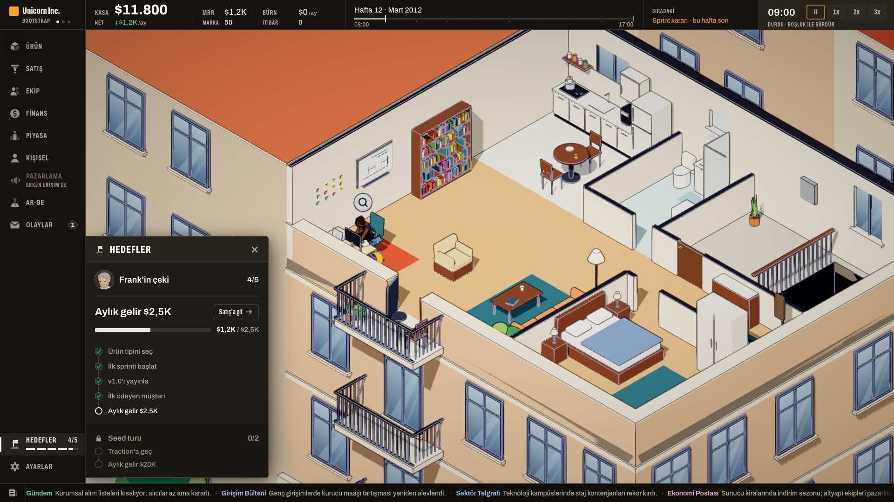
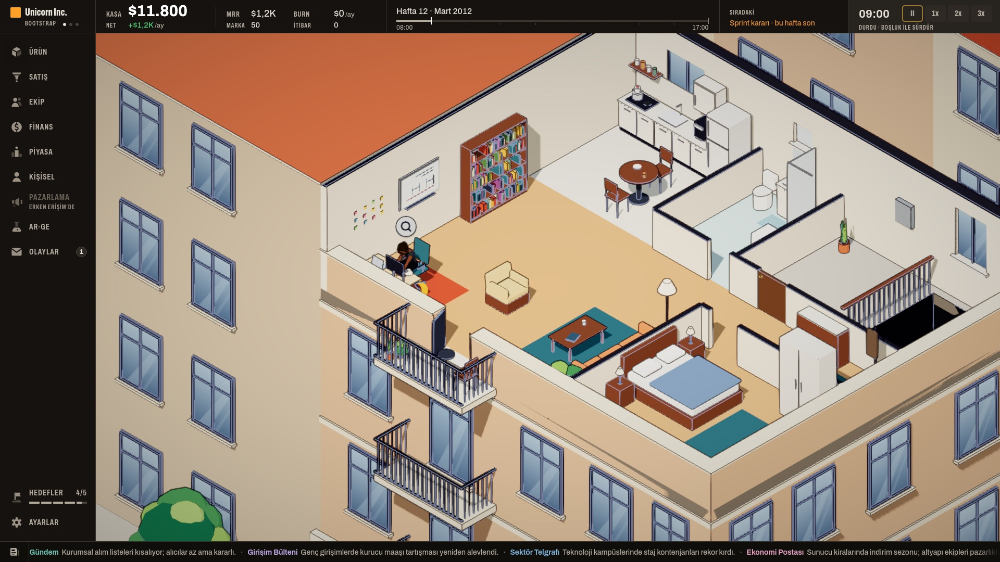
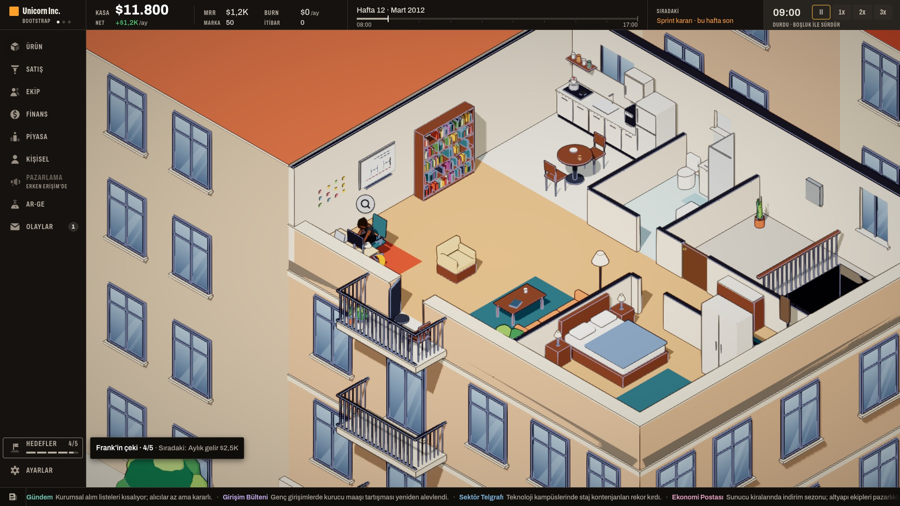
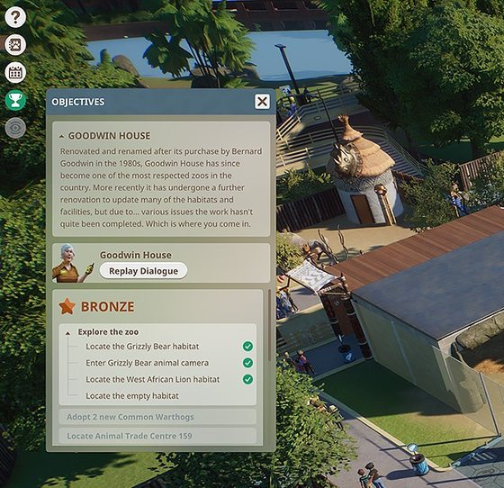
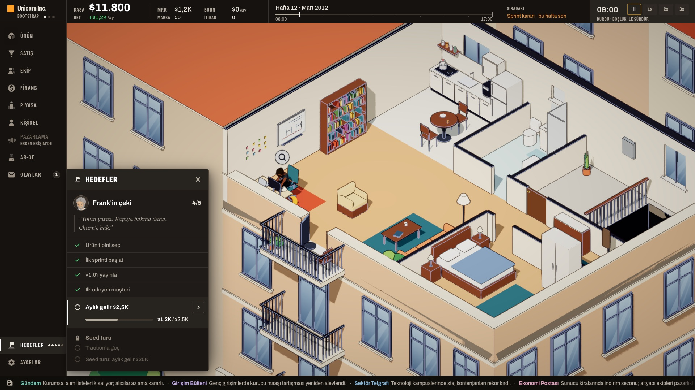
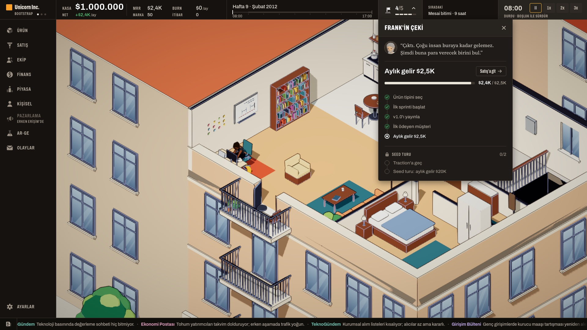
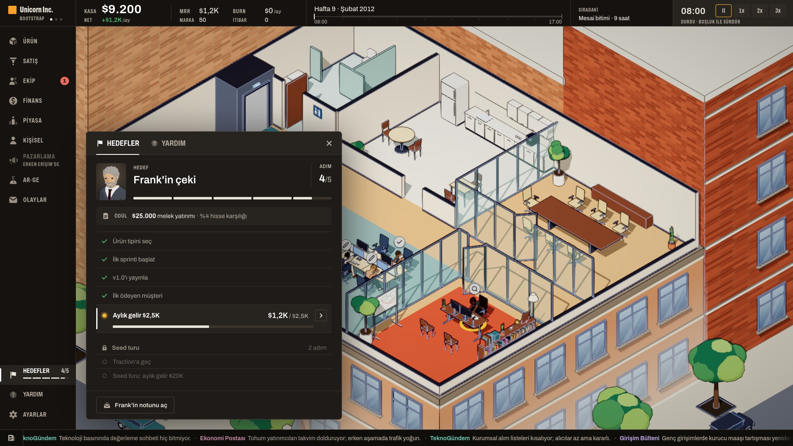

<title>Hedef Paneli Tasarımı</title>
<meta name="claude:viewport-fit-sides" content="cover">
<link rel="preconnect" href="https://fonts.googleapis.com">
<link rel="stylesheet" href="https://fonts.googleapis.com/css2?family=Barlow+Condensed:wght@500;600;700&family=IBM+Plex+Sans:wght@400;500;600&family=IBM+Plex+Mono:wght@400;500&display=swap">
<style>
/* Layout: tek okuma şeridi; üstte önerilen tasarımın üç hâli, sonra Planet Zoo örneği, sonra öbür üç yön ve puan tablosu, en altta kararlar. */
:root{
  --bg:#f3efe7; --surface:#fbf8f2; --ink:#26221c; --muted:#6d6457; --line:#d9d0c1;
  --accent:#b8761c; --good:#3d7a4a; --bad:#a3402f; --info:#3f6f8f;
  --f-display:"Barlow Condensed","Arial Narrow",sans-serif;
  --f-body:"IBM Plex Sans",system-ui,sans-serif;
  --f-mono:"IBM Plex Mono",ui-monospace,monospace;
  color-scheme:light;
}
@media (prefers-color-scheme:dark){:root:not([data-theme="light"]){
  --bg:#1c1915; --surface:#25211c; --ink:#ece5d8; --muted:#a59a89; --line:#3b352d;
  --accent:#e0a03e; --good:#7cbf87; --bad:#e07a66; --info:#7fb2d4; color-scheme:dark}}
:root[data-theme="dark"]{
  --bg:#1c1915; --surface:#25211c; --ink:#ece5d8; --muted:#a59a89; --line:#3b352d;
  --accent:#e0a03e; --good:#7cbf87; --bad:#e07a66; --info:#7fb2d4; color-scheme:dark}
body{background:var(--bg);color:var(--ink);font:15px/1.6 var(--f-body);
  padding-left:max(16px,env(safe-area-inset-left,0px));padding-right:max(16px,env(safe-area-inset-right,0px));padding-block:32px 64px}
main{max-width:1040px;margin:0 auto;display:flex;flex-direction:column;gap:40px}
h1,h2,h3{font-family:var(--f-display);font-weight:600;line-height:1.1;text-wrap:balance;margin:0}
h1{font-size:42px} h2{font-size:28px} h3{font-size:21px}
p{margin:0;max-width:72ch}
section{display:flex;flex-direction:column;gap:14px;min-width:0}
.eyebrow{font:500 12px/1 var(--f-mono);letter-spacing:.12em;text-transform:uppercase;color:var(--accent)}
.note{font-size:13px;color:var(--muted)}
.box{background:var(--surface);border:1px solid var(--line);border-radius:6px;padding:16px 18px;min-width:0}
figure{margin:0;display:flex;flex-direction:column;gap:8px;min-width:0}
figure img{width:100%;max-width:100%;height:auto;border-radius:6px;border:1px solid var(--line);display:block}
figcaption{font-size:13px;color:var(--muted)}
.pick{border:1px solid var(--accent);border-left:4px solid var(--accent)}
.two{display:grid;grid-template-columns:repeat(2,minmax(0,1fr));gap:14px}
.three{display:grid;grid-template-columns:repeat(3,minmax(0,1fr));gap:14px}
.ref{display:grid;grid-template-columns:minmax(0,300px) minmax(0,1fr);gap:18px;align-items:start}
.ref ul,.why ul{margin:0;padding-left:20px;display:flex;flex-direction:column;gap:6px;font-size:14px}
.scroll{overflow-x:auto}
table{border-collapse:collapse;width:100%;min-width:620px;font-size:14px}
th,td{text-align:left;padding:8px 10px;border-bottom:1px solid var(--line);vertical-align:top}
th{font:500 12px/1.3 var(--f-mono);letter-spacing:.06em;text-transform:uppercase;color:var(--muted)}
td.n{font:600 15px/1.3 var(--f-mono);font-variant-numeric:tabular-nums;text-align:center}
tr.sum td{font-weight:600}
.q{display:flex;flex-direction:column;gap:16px;counter-reset:q;list-style:none;padding:0;margin:0}
.q > li{counter-increment:q;display:grid;grid-template-columns:34px minmax(0,1fr);gap:10px}
.q > li::before{content:counter(q);font:600 24px/1 var(--f-display);color:var(--accent);text-align:right}
.q .rec{display:block;margin-top:4px;font-size:14px}
.q .rec b{color:var(--accent)}
@media (max-width:760px){.two,.three,.ref{grid-template-columns:minmax(0,1fr)} h1{font-size:34px}}
</style>

<main>
<header style="display:flex;flex-direction:column;gap:12px">
  <span class="eyebrow">Hedef gösterimi · tasarım çalışması · 28 Ekim 2026</span>
  <h1>Hedefler nerede dursun?</h1>
  <p>İsteğin: üst bardaki "Sıradaki: Aylık gelir $2,5K" yerine hedefler Planet Zoo'daki gibi soru işareti ve ayarların yanındaki bir düğmeye gitsin, basınca ayrı bir görünüm açılsın, arayüzde yer kaplamasın. Üç yön oyunun gerçek karesinin üstüne çizildi; bir hakem puanladı; aşağıdaki birleşik tasarım üçünün en iyi taraflarını alıyor. Bunlar maket, kod henüz yok.</p>
</header>

<section>
  <span class="eyebrow">Önerim</span>
  <h2>Birleşik tasarım: rayda Hedefler, yanında panel</h2>
  <div class="box pick">
    <figure>
      
      <figcaption>Açık hâl. Önce şimdiki hedef büyük ve çubuğuyla ("$1,2K / $2,5K", "Satış'a git"), sonra beş adım, en altta kilitli sıradaki liste. Üst bardaki "Sıradaki" yalnız toplantı, kâğıt gibi öbür bildirimleri gösterir.</figcaption>
    </figure>
  </div>
  <div class="two">
    <figure>
      
      <figcaption>Kapalı hâl: rayın altında, Ayarlar'ın üstünde "HEDEFLER 4/5" ve beş parçalı çubuk. Ekranda başka yer tutmaz.</figcaption>
    </figure>
    <figure>
      
      <figcaption>Üstüne gelince: "Frank'in çeki · 4/5 · Sıradaki: Aylık gelir $2,5K".</figcaption>
    </figure>
  </div>
</section>

<section>
  <span class="eyebrow">Örnek</span>
  <div class="ref box">
    <figure>
      
      <figcaption>Planet Zoo, kariyer modu (Steam mağaza görüntüsü).</figcaption>
    </figure>
    <div class="why">
      <h3>Planet Zoo nasıl yapıyor</h3>
      <ul>
        <li>Sol üstte dikey bir rayda yuvarlak düğmeler: "?", Zoopedia, takvim, kupa (hedefler).</li>
        <li>Kupaya basınca rayın hemen yanında yüzen bir pencere açılır; oyun durmaz.</li>
        <li>Hedefler gruplu bir liste: biten adımın yanında yeşil tik, sıradaki gruplar altta soluk.</li>
        <li>Two Point Hospital'da hedef satırının kendisi ilerleme çubuğu gibi dolar; Cities: Skylines II'de sayılı bir ilerleme çubuğu var. Birleşik tasarımdaki büyük hedef çubuğu bu ikisinden.</li>
      </ul>
    </div>
  </div>
</section>

<section>
  <span class="eyebrow">Öbür yönler</span>
  <h2>Üç yön ve puanları</h2>
  <div class="three">
    <figure><figcaption><b>A · Ray.</b> Yer kaplamıyor; kapalıyken yalnız beş küçük nokta var, şimdiki hedef panelin altında kalıyor.</figcaption></figure>
    <figure><figcaption><b>B · Üst bar.</b> En iyi okunan; ama üst barda kalıcı 144 px tutuyor, dar ekranda sığmıyor ve toplantı kartlarının üstüne açılıyor.</figcaption></figure>
    <figure><figcaption><b>C · Hedefler ve Yardım.</b> İleriye iyi ölçekleniyor; ama panel ağır, küçük etiketler var ve "ödül" kutusu yanıltıcı. Yardım bugün boş.</figcaption></figure>
  </div>
  <div class="box scroll">
    <table>
      <thead><tr><th>Ölçüt (1–5)</th><th>A · Ray</th><th>B · Üst bar</th><th>C · Hedefler ve Yardım</th></tr></thead>
      <tbody>
        <tr><td>Kalıcı yer kaplamıyor, yine de bulunuyor</td><td class="n">5</td><td class="n">3</td><td class="n">4</td></tr>
        <tr><td>Kapalıyken ilerleme bir bakışta okunuyor</td><td class="n">3</td><td class="n">5</td><td class="n">4</td></tr>
        <tr><td>Panelin sırası (önce şimdiki hedef)</td><td class="n">3</td><td class="n">5</td><td class="n">2</td></tr>
        <tr><td>Üst bar ve rayla uyum</td><td class="n">4</td><td class="n">3</td><td class="n">4</td></tr>
        <tr><td>Üst bar doluyken çalışıyor (toplantı, teklif)</td><td class="n">5</td><td class="n">2</td><td class="n">5</td></tr>
        <tr><td>Yeni listelere ölçekleniyor (öğretici zinciri)</td><td class="n">3</td><td class="n">3</td><td class="n">4</td></tr>
        <tr class="sum"><td>Toplam</td><td class="n">23</td><td class="n">21</td><td class="n">23</td></tr>
      </tbody>
    </table>
  </div>
  <p class="note">Birleşik tasarım A'nın yerini, C'nin kapalı satırını ("4/5" ve parçalı çubuk) ve B'nin panel sırasını alıyor. Puanları veren bir yapay zekâ hakem; yerleşim ölçüleri koddan okundu (dar ekran kipi, bildirim yığını).</p>
</section>

<section>
  <span class="eyebrow">Senin kararların</span>
  <h2>Dört soru</h2>
  <ol class="q box">
    <li><div><b>Hangi tasarım?</b> Birleşik tasarım, A, B ya da C.
      <span class="rec"><b>Önerim: birleşik tasarım.</b> Senin "ayarların yanında, basınca açılsın, yer kaplamasın" tarifine uyuyor; kapalıyken de "4/5" okunuyor.</span></div></li>
    <li><div><b>Frank'in cümlesi</b> ("Yolun yarısı. Kapıya bakma daha.") panelde görünsün mü?
      <span class="rec"><b>Önerim:</b> panelde değil, Frank'in portresinin üstüne gelince ipucunda. Panel yalnız hedefi ve adımları gösterir.</span></div></li>
    <li><div><b>Hedef kalmayınca</b> (iki liste arası ya da Seed'den sonra) ray satırı ne olsun?
      <span class="rec"><b>Önerim:</b> satır kalkar; yeni liste gelince yeniden çıkar. Boş bir satır yer kaplar.</span></div></li>
    <li><div><b>Yardım sekmesi</b> (Planet Zoo'daki "?" gibi) şimdi mi eklensin?
      <span class="rec"><b>Önerim:</b> şimdi değil. Oyunda yardım içeriği yok; öğretici yazılınca aynı panele "Yardım" sekmesi olarak girer.</span></div></li>
  </ol>
  <p class="note">Seçince küçük bir iş olarak sıraya girer: ray satırı, panel, üst bardaki "Sıradaki"den hedefin çıkması, yeni metin anahtarları (önce İngilizce). Öğretici ve hedeflerin asıl tasarımı kararın gibi en sonda kalır.</p>
</section>
</main>
